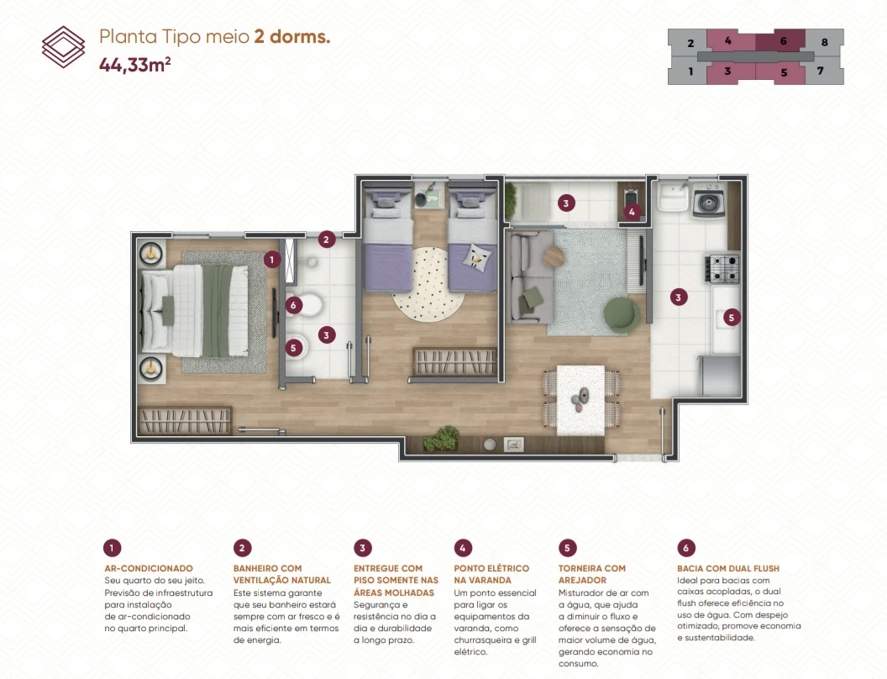
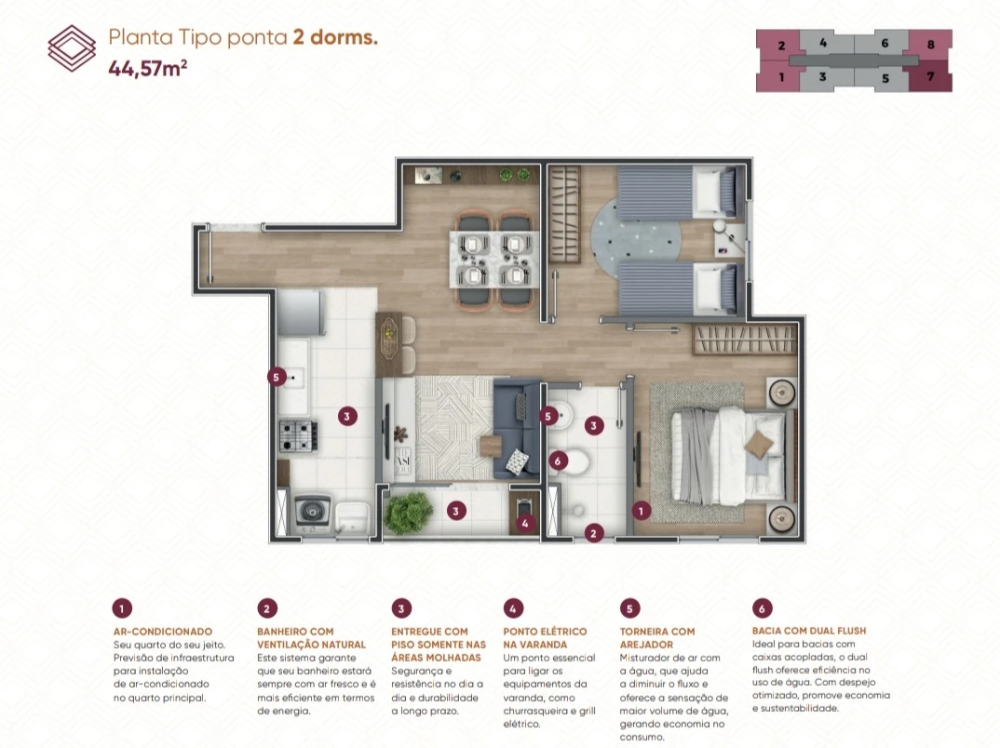
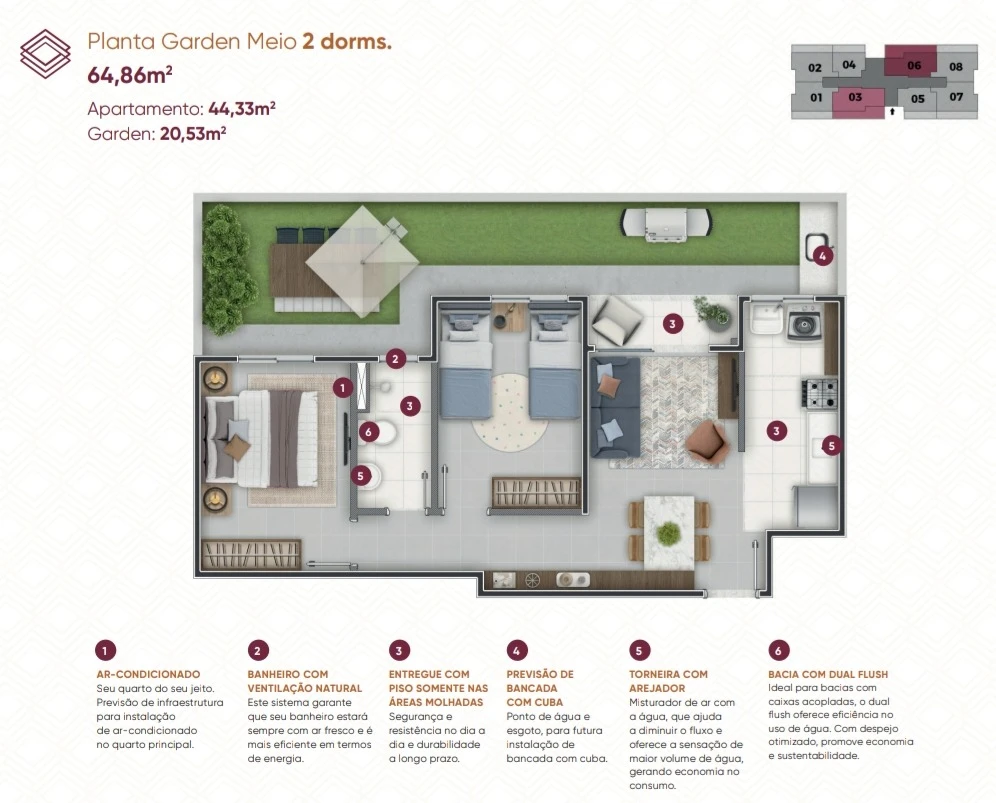
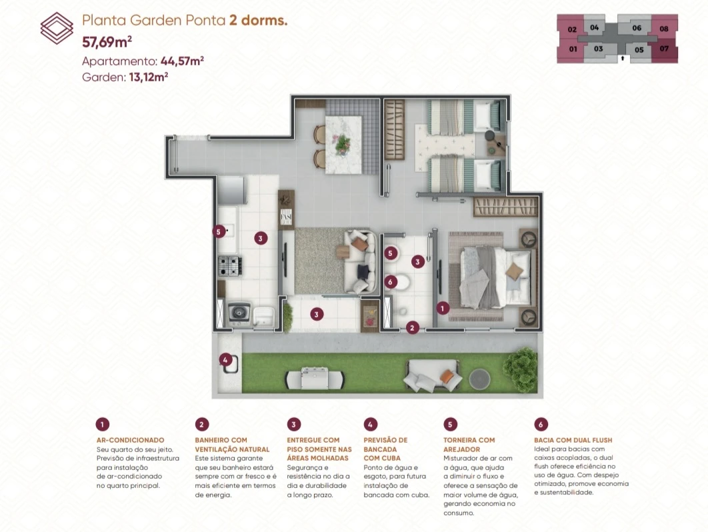
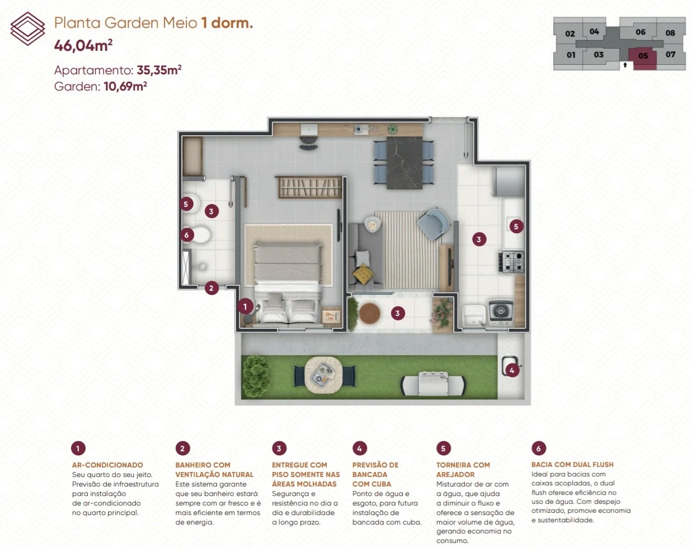
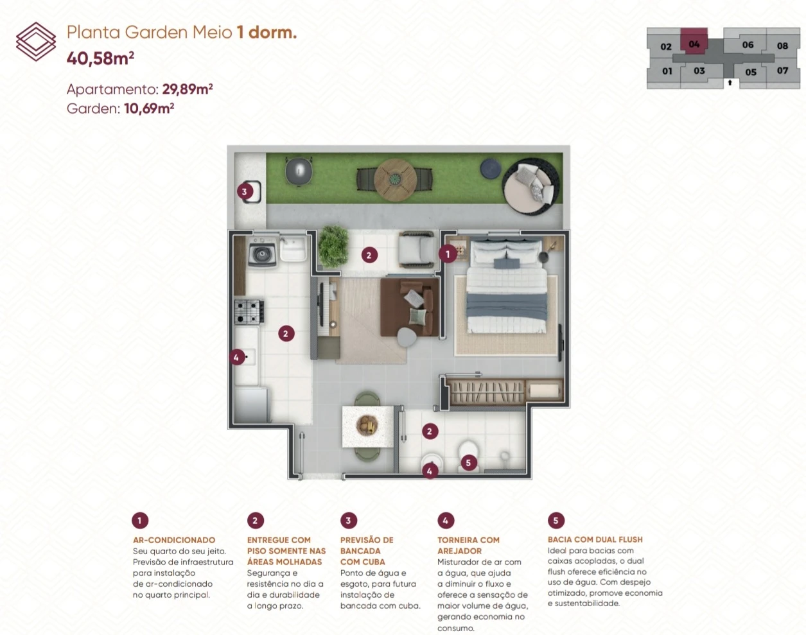

VILA PALÁCIOS • CAMPINAS
Seleto
Amoreiras.
Uma nova oportunidade na região das Amoreiras, com apartamentos, opções garden, varanda grill, lazer completo e mobilidade para deixar o dia a dia mais prático.
3 TORRES • 296 UNIDADES
1 E 2 DORMITÓRIOS
1 E 2 DORMITÓRIOS
SELETO AMOREIRAS
Conforto, mobilidade e lazer em um só lugar.
Implantado em um terreno de 11.347,62 m², o Seleto Amoreiras reúne três torres, 296 unidades e uma estrutura de condomínio com áreas de convivência, esporte, bem-estar e serviços. O projeto inclui apartamentos tipo e unidades garden, com soluções pensadas para diferentes momentos de vida.
GALERIA SELETO AMOREIRAS
Veja o projeto por diferentes perspectivas.
Navegue pelas imagens do empreendimento, apartamentos, lazer, gardens e áreas de conveniência.
1 / 19
Perspectivas e imagens ilustrativas. Consulte condições, disponibilidade e especificações atuais.
PLANTAS
Escolha a configuração que combina com a sua rotina.
Conheça as plantas tipo e garden apresentadas no material do empreendimento.

2 DORMITÓRIOS
Planta tipo meio • 44,33 m²
Planta funcional com varanda e previsão de infraestrutura para ar-condicionado no quarto principal.

2 DORMITÓRIOS
Planta tipo ponta • 44,57 m²
Configuração de ponta com varanda grill, banheiro com ventilação natural e ambientes bem distribuídos.

GARDEN • 2 DORMITÓRIOS
Garden meio • 64,86 m²
44,33 m² de apartamento + 20,53 m² de garden privativo para ampliar a experiência de morar.

GARDEN • 2 DORMITÓRIOS
Garden ponta • 57,69 m²
44,57 m² de apartamento + 13,12 m² de garden privativo.

GARDEN • 1 DORMITÓRIO
Garden meio • 46,04 m²
35,35 m² de apartamento + 10,69 m² de garden privativo.

GARDEN • 1 DORMITÓRIO
Garden meio • 40,58 m²
29,89 m² de apartamento + 10,69 m² de garden privativo.
LAZER & CONVENIÊNCIA
Uma estrutura completa para diferentes momentos do dia.
Espaços para relaxar, receber, se exercitar, brincar e cuidar da rotina sem sair do condomínio.
PiscinasSolárioQuadraFitnessPlaygroundSalão de festasEspaço gourmet com churrasqueiraPraça multiusoRedárioPet placeBicicletárioBricolagemCar wash
DIFERENCIAIS DAS UNIDADES
Detalhes que ajudam no conforto do dia a dia.
As unidades contam com varanda, quartos com janela veneziana, piso cerâmico nas áreas molhadas e previsão de infraestrutura para ar-condicionado no quarto principal. As plantas de 2 dormitórios apresentadas incluem ponto elétrico na varanda para equipamentos como churrasqueira ou grill elétrico.
VarandaInfra para ar-condicionadoVentilação natural*Bacia dual flush
LOCALIZAÇÃO
Mobilidade e conveniência na região das Amoreiras.
Av. Prof. Maria Julieta Godoi Cartezani, 185 — Vila Palácios, Campinas/SP.
1 minAtacadão2 minAv. Ruy Rodrigues2 minCentro Comercial Amoreiras4 minAssaí6 minBRT Ouro Verde10 minRod. Anhanguera11 minCampinas Shopping12 minRod. Bandeirantes
Tempos informados no material do empreendimento com base em deslocamento de carro via Google Maps.Passe o mouse para ver informações da região
FICHA TÉCNICA
Um projeto completo em números.
QUER CONHECER O SELETO AMOREIRAS?
Receba plantas, valores e condições.
Preencha seus dados para receber atendimento personalizado sobre disponibilidade, valores, condições e opções de planta.